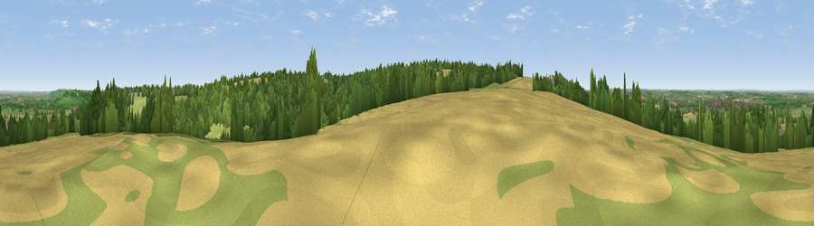

Viewpoint near Derry Hill
#16818 in England · top 30% of its area beats it · near Derry HillThe view, rendered

A 360° render of this exact spot computed from the terrain model, tree cover and land cover — summer colours, afternoon light, calibrated against photographs of famous viewpoints. Real trees, hedges and buildings will differ in detail.
The panorama
Grey silhouette: terrain skyline in each direction (720 bearings, Earth curvature and refraction included). Dashed green: skyline with trees (+15 m) and buildings (+8 m) as obstacles. Blue strip: how far the ground is visible on each bearing.
Where the view opens
Wedge length = distance to the farthest visible ground on that bearing (vegetation-aware). Rings at 10, 25 and 50 km.
What fills the view
45% grassland · 33% woodland · 20% cropland · 3% built-up
Angular shares of the visible panorama (visual magnitude), not map area. Landscape diversity 0.50 (0–1 Shannon).
Key numbers
More beautiful places nearby
The staircase of upgrades: each row has a higher view potential than everything closer. Driving times are estimates from straight-line distance, calibrated against real road routing — check an actual route before setting out.
| Place | Direction | Drive | Score |
|---|---|---|---|
| Viewpoint near Derry Hill | ESE · 1 km | ~3 min | 60.1 |
| Viewpoint near Bowden Hill | WSW · 1 km | ~4 min | 62.1 |
| Viewpoint near Heddington | SE · 7 km | ~14 min | 71.2 |
| King's Play Hill | ESE · 7 km | ~15 min | 73.9 |
| Morgan's Hill | ESE · 9 km | ~17 min | 74.3 |
| Viewpoint near Allington | ESE · 14 km | ~26 min | 75.6 |
| Hanging Hill | W · 23 km | ~38 min | 76.4 |
| Martinsell viewpoint | ESE · 24 km | ~39 min | 77.3 |
51.42830, -2.07798 · source: screening · position refined by local search. Computed location — check access rights before visiting.